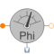

MagneticFluxSensorSensor to measure magnetic flux |

|
Information
This information is part of the Modelica Standard Library maintained by the Modelica Association.
Sensor for magnetic flux.
See also
Connectors (3)
| port_p |
Type: PositiveMagneticPort Description: Positive magnetic port of fundamental wave machines |
|
|---|---|---|
| port_n |
Type: NegativeMagneticPort Description: Negative magnetic port of fundamental wave machines |
|
| Phi |
Type: ComplexOutput Description: Complex magnetic flux from por_ p to port_n as output signal |
Components (1)
| V_m |
Type: ComplexMagneticPotentialDifference Description: Complex magnetic potential difference |
|---|